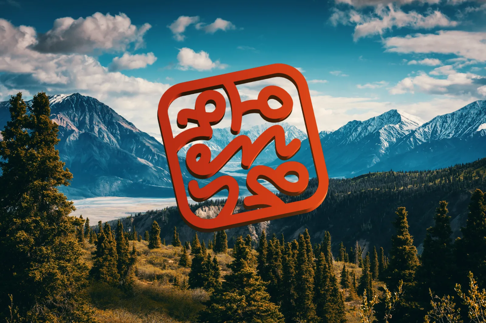

Art Practice
Художественная практика
My main medium is language. I make writing systems and take texts that people trust without reading them — a prayer, a medicine leaflet, the words on a banner — to write them in other letters or break their encoding. They become paintings, books and objects.
Мой основной медиум — язык. Я делаю письменности и беру тексты, которым верят, не читая, — молитву, инструкцию к лекарству, надпись на плакате, — чтобы записать их другими буквами или сломать им кодировку. По форме это картины, книги, объекты.
Читать художественное высказывание →
Works
Работы
City Lights (2026)
City Lights (2026)
A map of the night sky. Acrylic and thread on canvas.
Карта ночного неба. Холст, акрил, нить.
World Alphabet (2020 – Present)
Мировой алфавит (2020 – настоящее время)
An alphabet made of signs from different writing systems. Used in A — Apple (2021), Void (2023) and New World.
Алфавит из знаков разных письменностей. Им написаны «Я — Яблоко» (2021), «Пустота» (2023) и «New World».

Unproven Medicine (2019)
Бездоказательная медицина (2019)
Endafterol, Endafterol G, Orwellol. Medicine jars, gelatin capsules, sugar pills, water, lucky tickets, the artist's tears.
Эндафтерол, Эндафтерол Г, Орвеллол. Банки из-под лекарств, желатиновые капсулы, сахарные шарики, вода, счастливые билеты, слёзы художника.
I Am Very Glad, as I Am Finally Returning Home (2019)
Я очень рад, ведь я наконец возвращаюсь домой (2019)
Performance. Soviet red banner cloth (kumach), slogan. Nizhny Novgorod.
Перформанс. Советский кумач, лозунг. Нижний Новгород.
There Is More Russian in This Than in All of Pushkin's Poetry
В этом больше русского, чем во всей поэзии Пушкина
Flag. Paint on fabric.
Флаг. Ткань, краска по ткани.